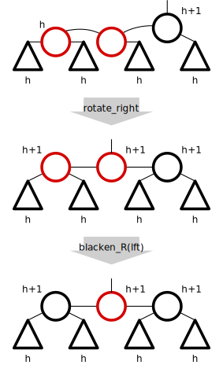

Verifying a balanced-tree index implementation in VeriFast
James Fisher
Structure
Introduction.
A verification of LLRB insert.
Evaluation.
Conclusion.
Introduction
What is verification?
Problem: Programs are hard to describe.
Solution: Formal specifications.
Problem: Programs have bugs.
Solution: Proofs of correctness.
Verification = specification + proof
Verification is hard!
Laborious.
Mistakes are easy.
Divergence is easy.
Separation logic to the rescue!
Problem: Hoare-style proofs of heap programs don't scale.
Cause: Disjointness is explicit and non-compositional.
Solution: Operator to express disjointness.
Machines to the rescue!
Proof checking. No mistakes, no divergence.
Proof search. Shorter proofs.
Verifast
A verification assistant.
Bart Jacobs, K U Leuven, 2008+.
Basis in separation logic.
C.
Indexes
Key-value store.
(Syn.: map, partial function)
{ "james": "07951 498 897", "emergency": "999" }
Indexes are ubiquitous
Caching.
Object storage (identity → attributes).
Extensionally defined functions.
Index implementations are various
- Array
- Association list
- Radix tree
- van Emde Boas tree
- Skip list
- Hash table
- Binary search tree
- Splay tree
- AVL tree
- Bloomier filter
- Red-Black Tree
- AA-tree
- LLRB-tree
- B-tree
- B+-tree
- B*-tree
- Trie
- Linked list
Different data structures for different use-cases.
Index implementations are complex
Example: Red-Black Trees.
Here's the OpenJDK implementation of insert in all its glory …
public V put(K key, V value) {
Entry t = root;
if (t == null) {
// TBD:
// 5045147: (coll) Adding null to an empty TreeSet should
// throw NullPointerException
//
// compare(key, key); // type check
root = new Entry(key, value, null);
size = 1;
modCount++;
return null;
}
int cmp;
Entry parent;
// split comparator and comparable paths
Comparator cpr = comparator;
if (cpr != null) {
do {
parent = t;
cmp = cpr.compare(key, t.key);
if (cmp < 0)
t = t.left;
else if (cmp > 0)
t = t.right;
else
return t.setValue(value);
} while (t != null);
}
else {
if (key == null)
throw new NullPointerException();
Comparable k = (Comparable) key;
do {
parent = t;
cmp = k.compareTo(t.key);
if (cmp < 0)
t = t.left;
else if (cmp > 0)
t = t.right;
else
return t.setValue(value);
} while (t != null);
}
Entry e = new Entry(key, value, parent);
if (cmp < 0)
parent.left = e;
else
parent.right = e;
fixAfterInsertion(e);
size++;
modCount++;
return null;
}
private void fixAfterInsertion(Entry x) {
x.color = RED;
while (x != null && x != root && x.parent.color == RED) {
if (parentOf(x) == leftOf(parentOf(parentOf(x)))) {
Entry y = rightOf(parentOf(parentOf(x)));
if (colorOf(y) == RED) {
setColor(parentOf(x), BLACK);
setColor(y, BLACK);
setColor(parentOf(parentOf(x)), RED);
x = parentOf(parentOf(x));
} else {
if (x == rightOf(parentOf(x))) {
x = parentOf(x);
rotateLeft(x);
}
setColor(parentOf(x), BLACK);
setColor(parentOf(parentOf(x)), RED);
rotateRight(parentOf(parentOf(x)));
}
} else {
Entry y = leftOf(parentOf(parentOf(x)));
if (colorOf(y) == RED) {
setColor(parentOf(x), BLACK);
setColor(y, BLACK);
setColor(parentOf(parentOf(x)), RED);
x = parentOf(parentOf(x));
} else {
if (x == leftOf(parentOf(x))) {
x = parentOf(x);
rotateRight(x);
}
setColor(parentOf(x), BLACK);
setColor(parentOf(parentOf(x)), RED);
rotateLeft(parentOf(parentOf(x)));
}
}
}
root.color = BLACK;
}
private void rotateLeft(Entry p) {
if (p != null) {
Entry r = p.right;
p.right = r.left;
if (r.left != null)
r.left.parent = p;
r.parent = p.parent;
if (p.parent == null)
root = r;
else if (p.parent.left == p)
p.parent.left = r;
else
p.parent.right = r;
r.left = p;
p.parent = r;
}
}
private void rotateRight(Entry p) {
if (p != null) {
Entry l = p.left;
p.left = l.right;
if (l.right != null) l.right.parent = p;
l.parent = p.parent;
if (p.parent == null)
root = l;
else if (p.parent.right == p)
p.parent.right = l;
else p.parent.left = l;
l.right = p;
p.parent = l;
}
}
Bugs!
if (t == null) {
// TBD:
// 5045147: (coll) Adding null to an empty TreeSet should
// throw NullPointerException
//
// compare(key, key); // type check
Left-Leaning Red-Black Trees
Variant of Red-Black Trees.
Introduced by Robert Sedgwick in 2008.
Imposes more constraints on the data structure.
Algorithms become simpler.
Retains the spirit of the Red-Black Tree algorithms.
Project goal
Use VeriFast
to specify and verify
a C implementation of
Left-Leaning Red-Black Trees.
Verifying LLRB insert
A set-theoretical index definition
Index, n.: a set of pairs with unique first elements.
This needs a bit of work for VeriFast to understand.
Pairs
Index, n.: a set of pairs with unique first elements.
So we need a data type for pairs. In VeriFast we write:
Read it like the Haskell:
data Pair k v = Pair k v
Sets …?
Index, n.: a set of pairs with unique first elements.
How do we represent a set with algebraic data types?
Algebraic data types impose an ordering.
The best we can do are lists.
Unique keys
Index, n.: a list of pairs with unique first elements.
Is uniqueness enough? No …
{ 1:a
, 2:b
, 3:c
} = { 2:b
, 1:a
, 3:c
}
[(1,a
), (2,b
), (3,c
)] ≠ [(2,b
), (1,a
), (3,c
)]
We want a canonical ordering: sortedness!
Then [(2,b
), (1,a
), (3,c
)]
is simply not an index.
Sortedness
Index, n.: a list of pairs sorted by first elements.
VeriFast Index definition
Index, n.: a list of pairs sorted by first elements.
An index I , from Ks to Vs, is …
of type List<Pair<int,V> >
where sorted(I) == true .
Binary Search Tree
The LLRB is an augmented Binary Search Tree.
Single extra field on node: colored red or black.
Definition in C
The C datatype doesn't tell us much about how TreeNode values are used.
Are the pointers valid?
Are the nodes even connected as a tree?
Trees in VeriFast
Algebraic data types to the rescue!
These are definitely trees!
Trees in C?
How do we link the C data type with the VeriFast tree?
How is this an index?
We need to relate this to our index definition.
Notice that binary search ordering is simply given by sorted(flatten(T)) !
Black rule
Rule: All paths from the root to a leaf must contain the same number of black nodes.
Then we can define a tree's
black height
.
Red rule
Rule: All local color triples must be one of:
(Leaf nodes are considered black, and the whole tree has a black root)
Black and red rules in VeriFast
The LLRB is balanced
The longest path to a leaf is no more than twice the shortest.

(I've proved this in VeriFast, but we don't have time for it!)
Index insert
I define insertion in terms of search:
Require index_search and index_insert for which this holds.
(No time!)
C insert procedures
LLRB insert has two mutually recursive procedures.
llrb_insert_R inserts into a red-rooted tree.
Positive return value indicates the tree needs fixing
.
Contracts
Just looking at llrb_insert_B (the first procedure to be called).
| pointer(rootptr, ?root0) | A single-cell heap chunk with address rootptr and some value root0 |
|---|---|
| IsLLRB(t1, result ? Red : Blk, h) | If the procedure returns true then the new tree t1 is red-rooted. |
A bit of the procedure …
We have inserted into a red left subtree.
We now have to fix the tree.
We use a fixer fix_RVLeft to do that.
This fixer has to transform something called an RVLeft into a red-rooted tree.
Fixing an RVLeft
This can be decomposed: rotate right and recolor left.
Fixing an RVLeft: algorithm

More operations
All that was a small fragment of LLRB insert.
The rest of insert is done too!
So are these operations …
- Search
- Iterate
- Remove the min.
- Remove
Evaluation
Limitations of VeriFast
- Only partial correctness
- Fixpoint totality
- Memory complexity
- No purity
- No dependent types
- No interfaces
- Fact representation
- Un-natural C
- Pattern-matching
- Vacuuous truth
- Lack of documentation
- Closed source!
Correspondence
A lot of emails went back and forth between me and Bart!
Uncovered a number of (mostly trivial) bugs.
Most were fixed quickly.
Also had to contact Bart for help on undocumented or unclear features.
One predicate to rule them all
This report presented the pieces of the verification puzzle in many chunks: Trees, fixpoints, predicates.
When I first started, I had one large predicate that expressed the memory layout, the LLRB structure, and the sortedness.
Unwieldy.
Partial verification is useful!
Tried to verify too much at once:
- Memory allocation
- Key ordering
- Red rule
- Black rule
- Index specification
Better approach: work from the least to most challenging.
This is how verification would proceed in a practical environment.
Multiple equivalent definitions
For searching BSTs,
I used a naturalistic
definition of sortedness:
keys in left tree less than root, keys in right tree greater than root, subtrees sorted too.
Had to prove equivalence with the definition seen in this presentation.
Further work
Iterative implementations. I verified an iterative search, but other operations will be significantly different to their recursive versions.
Express the red rule in the algebraic type. This rule can be defined using standard functional languages; VeriFast is no different.
More tree operations. I have specifications but no implementations for mapValues, mapKeysMonotonic, and union.
Similar data structures. The most obvious is the classic Red-Black tree. Others include the AA tree and, to a lesser extent, the AVL tree.
Conclusion
Assessment of practicability of machine-assisted program verification.
Rule of diminishing returns.
Particulars (VeriFast, LLRB) well-chosen.
Boundaries of verification with VeriFast reached.
Major VeriFast project. About 5,000 lines.
Good potential for further work.